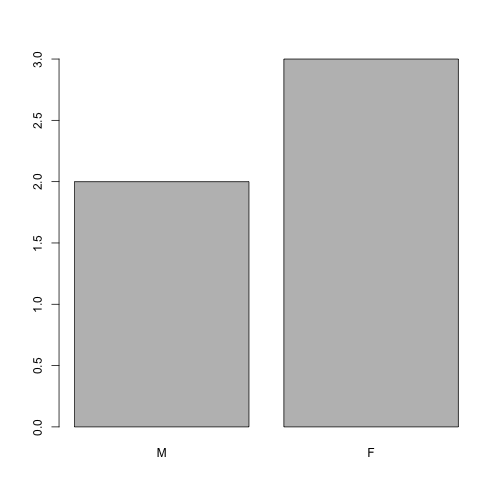

データから始める
最終更新日：2026-11-07 | ページの編集
概要
質問
- Rによる初めてのデータ分析
目的
-
data.frameとは何か説明してください。 - .csvファイルから外部データをデータフレームに読み込みます。
- データフレームの内容を要約します。
- 因子とは何か説明してください。
- 文字列と因子を相互に変換します。
- 因子の順序を入れ替え、名称を変更します。
- 日付をフォーマットします。
- データをエクスポートして保存します。
このエピソードは、Data Carpentriesの「生態学者のためのRによるデータ分析と可視化」レッスンに基づいています。
遺伝子発現データの提示
Blackmore et al. (2017)が発表したデータの一部である『The effect of upper-respiratory infection on transcriptomic changes in the CNS』を使用します。本研究の目的は、上気道感染症が感染後の小脳および脊髄で起こるRNA転写の変化に及ぼす影響を明らかにすることでした。性別を一致させた8週齢のC57BL/6マウスに、生理食塩水またはインフルエンザA型を経鼻投与し、0日目（非感染）、4日目、および8日目にRNA-seqを用いて小脳および脊髄組織におけるトランスクリプトームの変化を評価しました。
データセットはカンマ区切り値（CSV）ファイルとして保存されています。各行には単一のRNA発現測定に関する情報が含まれており、最初の11列はそれぞれ以下を表しています。
| 列 | 説明 |
|---|---|
| gene | 測定された遺伝子名 |
| sample | 遺伝子発現を測定したサンプル名 |
| expression | 遺伝子発現の値 |
| organism | 生物体/種 - ここではすべてのデータがマウス由来です。 |
| age | マウスの年齢（ここではすべてのマウスが8週齢でした） |
| sex | マウスの性別 |
| infection | マウスの感染状態、すなわちインフルエンザA型への感染の有無です。 |
| strain | A型インフルエンザ株。 |
| time | 感染期間（日数）。 |
| tissue | 遺伝子発現実験に用いられた組織、すなわち小脳または脊髄。 |
| mouse | マウスの一意の識別子。 |
Rの関数download.file()を使用して遺伝子発現データを含むCSVファイルをダウンロードし、read.csv()を用いてCSVファイルの内容をクラスdata.frameのオブジェクトとしてメモリに読み込みます。download.fileコマンドの最初の項目は、ソースURLを示す文字列です。このソースURLは、GitHubリポジトリからCSVファイルをダウンロードします。カンマ（"data/rnaseq.csv"）以降のテキストは、ローカルマシン上のファイルの保存先です。ファイルをダウンロードするための"data"というフォルダがマシン上に必要になります。したがって、このコマンドはリモートファイルをダウンロードし、"rnaseq.csv"という名前を付けて、既存の"data"というフォルダに追加します。
R
download.file(url = "https://github.com/carpentries-incubator/bioc-intro/raw/main/episodes/data/rnaseq.csv",
destfile = "data/rnaseq.csv")
これでデータを読み込む準備が整いました。
R
rna <- read.csv("data/rnaseq.csv")
この記述では何も出力されません。ご記憶にある通り、代入を行っても何も表示されないためです。データが読み込まれたか確認したい場合は、データフレーム名を入力することでその内容を表示できます。
R
rna
うわあ……かなりの出力量ですね。少なくとも、データが正常に読み込まれたということですね。関数
head()
を使って、このデータフレームの先頭（最初の6行）を確認してみましょう：
R
head(rna)
出力
gene sample expression organism age sex infection strain time
1 Asl GSM2545336 1170 Mus musculus 8 Female InfluenzaA C57BL/6 8
2 Apod GSM2545336 36194 Mus musculus 8 Female InfluenzaA C57BL/6 8
3 Cyp2d22 GSM2545336 4060 Mus musculus 8 Female InfluenzaA C57BL/6 8
4 Klk6 GSM2545336 287 Mus musculus 8 Female InfluenzaA C57BL/6 8
5 Fcrls GSM2545336 85 Mus musculus 8 Female InfluenzaA C57BL/6 8
6 Slc2a4 GSM2545336 782 Mus musculus 8 Female InfluenzaA C57BL/6 8
tissue mouse ENTREZID
1 Cerebellum 14 109900
2 Cerebellum 14 11815
3 Cerebellum 14 56448
4 Cerebellum 14 19144
5 Cerebellum 14 80891
6 Cerebellum 14 20528
product
1 argininosuccinate lyase, transcript variant X1
2 apolipoprotein D, transcript variant 3
3 cytochrome P450, family 2, subfamily d, polypeptide 22, transcript variant 2
4 kallikrein related-peptidase 6, transcript variant 2
5 Fc receptor-like S, scavenger receptor, transcript variant X1
6 solute carrier family 2 (facilitated glucose transporter), member 4
ensembl_gene_id external_synonym chromosome_name gene_biotype
1 ENSMUSG00000025533 2510006M18Rik 5 protein_coding
2 ENSMUSG00000022548 <NA> 16 protein_coding
3 ENSMUSG00000061740 2D22 15 protein_coding
4 ENSMUSG00000050063 Bssp 7 protein_coding
5 ENSMUSG00000015852 2810439C17Rik 3 protein_coding
6 ENSMUSG00000018566 Glut-4 11 protein_coding
phenotype_description
1 abnormal circulating amino acid level
2 abnormal lipid homeostasis
3 abnormal skin morphology
4 abnormal cytokine level
5 decreased CD8-positive alpha-beta T cell number
6 abnormal circulating glucose level
hsapiens_homolog_associated_gene_name
1 ASL
2 APOD
3 CYP2D6
4 KLK6
5 FCRL2
6 SLC2A4R
## Try also
## View(rna)
注
read.csv()
はフィールドがカンマで区切られていることを前提としていますが、一部の国ではカンマが小数点の区切り文字として、セミコロン
(;) がフィールドの区切り文字として使用されています。R
でこのような形式のファイルを読み込む場合は、read.csv2()
関数を使用できます。この関数は read.csv()
と全く同様に動作しますが、小数点およびフィールドの区切り文字に異なるパラメータを使用します。別の形式を扱う場合は、どちらもユーザーが指定可能です。詳細については、?read.csv
と入力して read.csv()
のヘルプを参照してください。また、タブ区切りのデータファイルを読み込むための
read.delim()
関数もあります。重要な点として、これらの関数はすべて、実際には異なる引数を持つメインの
read.table()
関数のラッパー関数となっています。そのため、上記のデータは
, のように区切り文字引数を指定して
read.table()
を使用して読み込むこともできました。コードは以下の通りです。
R
rna <- read.table(file = "data/rnaseq.csv",
sep = ",",
header = TRUE)
デフォルトでは read.table() の header 引数が FALSE
に設定されているため、ヘッダーを読み込むには header 引数を TRUE
に設定する必要があります。
データフレームとは何ですか？
データフレームは、ほとんどの表形式データにおける事実上のデータ構造であり、統計処理やプロットに用いられます。
データフレームは手動で作成することもできますが、一般的にはread.csv()やread.table()といった関数を用いて生成されます。言い換えれば、ハードディスク（またはウェブ）からスプレッドシートをインポートする際に作成されます。
データフレームとは、列がすべて同じ長さのベクトルである表形式のデータ表現のことです。列はベクトルであるため、各列には単一のデータ型（例：文字、整数、因子）が含まれている必要があります。例えば、以下は数値ベクトル、文字ベクトル、および論理ベクトルからなるデータフレームを示した図です。

これは、str()関数を用いてデータフレームのstr構造を確認することで分かります。
R
str(rna)
出力
'data.frame': 32428 obs. of 19 variables:
$ gene : chr "Asl" "Apod" "Cyp2d22" "Klk6" ...
$ sample : chr "GSM2545336" "GSM2545336" "GSM2545336" "GSM2545336" ...
$ expression : int 1170 36194 4060 287 85 782 1619 288 43217 1071 ...
$ organism : chr "Mus musculus" "Mus musculus" "Mus musculus" "Mus musculus" ...
$ age : int 8 8 8 8 8 8 8 8 8 8 ...
$ sex : chr "Female" "Female" "Female" "Female" ...
$ infection : chr "InfluenzaA" "InfluenzaA" "InfluenzaA" "InfluenzaA" ...
$ strain : chr "C57BL/6" "C57BL/6" "C57BL/6" "C57BL/6" ...
$ time : int 8 8 8 8 8 8 8 8 8 8 ...
$ tissue : chr "Cerebellum" "Cerebellum" "Cerebellum" "Cerebellum" ...
$ mouse : int 14 14 14 14 14 14 14 14 14 14 ...
$ ENTREZID : int 109900 11815 56448 19144 80891 20528 97827 118454 18823 14696 ...
$ product : chr "argininosuccinate lyase, transcript variant X1" "apolipoprotein D, transcript variant 3" "cytochrome P450, family 2, subfamily d, polypeptide 22, transcript variant 2" "kallikrein related-peptidase 6, transcript variant 2" ...
$ ensembl_gene_id : chr "ENSMUSG00000025533" "ENSMUSG00000022548" "ENSMUSG00000061740" "ENSMUSG00000050063" ...
$ external_synonym : chr "2510006M18Rik" NA "2D22" "Bssp" ...
$ chromosome_name : chr "5" "16" "15" "7" ...
$ gene_biotype : chr "protein_coding" "protein_coding" "protein_coding" "protein_coding" ...
$ phenotype_description : chr "abnormal circulating amino acid level" "abnormal lipid homeostasis" "abnormal skin morphology" "abnormal cytokine level" ...
$ hsapiens_homolog_associated_gene_name: chr "ASL" "APOD" "CYP2D6" "KLK6" ...
data.frame オブジェクトの確認
データフレームの内容や構造を確認する際に、head() や
str()
といった関数がどのように役立つかはすでに見てきました。ここでは、データの内容や構造を把握するための関数を、網羅的ではありませんがいくつか紹介します。さっそく試してみましょう！
サイズ:
-
dim(rna)- 行数を第1要素、列数を第2要素とするベクトル（オブジェクトの次元）を返します。 -
nrow(rna)- 行数を返します。 -
ncol(rna)- 列数を返します。
内容:
-
head(rna)- 最初の6行を表示します。 -
tail(rna)- 直近の6行を表示します。
名称:
-
names(rna)- 列名を返します（data.frameオブジェクトの場合はcolnames()と同義です）。 -
rownames(rna)- 行名を返します。
概要:
-
str(rna)- オブジェクトの構造、およびクラス、各列の長さと内容に関する情報。 -
summary(rna)- 各列の要約統計量。
注：これらの関数の多くは「汎用的」であり、data.frame以外の種類のオブジェクトにも使用できます。
課題：
str(rna)の出力結果をもとに、以下の質問に答えられますか？
- オブジェクト
rnaのクラスは何ですか？ - このオブジェクトの行数と列数はそれぞれいくつですか？
- クラス: データフレーム
- 行数: 32428、列数: 19
データフレームのインデックス指定と部分抽出
今回のrnaデータフレームには行と列（2次元）があります。ここから特定のデータを抽出したい場合は、目的の「座標」を指定する必要があります。まず行番号、次に列番号の順で指定します。ただし、これらの座標の指定方法によって、得られる結果のクラスが異なる点に注意してください。
R
# first element in the first column of the data frame (as a vector)
rna[1, 1]
# first element in the 6th column (as a vector)
rna[1, 6]
# first column of the data frame (as a vector)
rna[, 1]
# first column of the data frame (as a data.frame)
rna[1]
# first three elements in the 7th column (as a vector)
rna[1:3, 7]
# the 3rd row of the data frame (as a data.frame)
rna[3, ]
# equivalent to head_rna <- head(rna)
head_rna <- rna[1:6, ]
head_rna
:は、整数の数値ベクトルを昇順または降順に生成する特殊な関数です。例として1:10や10:1をお試しください。詳細は「ベクトルの生成」セクションを参照してください。
また、「-」記号を使用して、データフレームの特定のインデックスを除外することもできます。
R
rna[, -1] ## The whole data frame, except the first column
rna[-c(7:66465), ] ## Equivalent to head(rna)
データフレームは、インデックスを指定する（前述の通り）ほか、列名を直接指定することでもサブセットを抽出できます。
R
rna["gene"] # Result is a data.frame
rna[, "gene"] # Result is a vector
rna[["gene"]] # Result is a vector
rna$gene # Result is a vector
RStudioでは、自動補完機能を使って、列の正式名称を正しく取得できます。
課題
rnaデータセットの200行目のデータのみを含むdata.frame(rna_200)を作成してください。nrow()がdata.frameの行数を返したことに注目してください。
その数値を使って、初期の
rnaデータフレームから最後の行だけを抽出してください。それを
tail()を用いて最終行として表示されている内容と比較し、想定通りになっているか確認してください。行番号の代わりに
nrow()を使用して、最後の行を抽出してください。その最終行から新しいデータフレーム（
rna_last）を作成します。
nrow()を使用して、rnaデータフレームの中央にある行を抽出してください。この行の内容をrna_middleという名前のオブジェクトに格納してください。nrow()を上記の-表記と組み合わせ、rnaデータセットの1行目から6行目のみを保持した状態でhead(rna)の動作を再現してください。
R
## 1.
rna_200 <- rna[200, ]
## 2.
## Saving `n_rows` to improve readability and reduce duplication
n_rows <- nrow(rna)
rna_last <- rna[n_rows, ]
## 3.
rna_middle <- rna[n_rows / 2, ]
## 4.
rna_head <- rna[-(7:n_rows), ]
因子
因子はカテゴリカルデータを表します。これらはラベルに紐付けられた整数として格納され、順序付きまたは順序なしのいずれかとなります。因子は見た目（および多くの場合の挙動）は文字ベクトルのようですが、実際にはRでは整数ベクトルとして扱われます。そのため、文字列として扱う際には十分な注意が必要です。
一度作成されると、因子には水準と呼ばれるあらかじめ定義された値の集合しか含めることができません。デフォルトでは、Rは常に水準をアルファベット順に並べ替えます。例えば、2つの水準を持つ因子がある場合：
R
sex <- factor(c("male", "female", "female", "male", "female"))
Rは、レベル"female"に1を、レベル"male"に2を割り当てます（このベクトルの最初の要素は"male"ですが、fがmより前にあるためです）。これは関数levels()を使用することで確認でき、レベル数はnlevels()で調べることができます：
R
levels(sex)
出力
[1] "female" "male" R
nlevels(sex)
出力
[1] 2因子の順序が重要でない場合もあれば、意味があるため（例：「低」、「中」、「高」）、可視化を向上させるため、あるいは特定の種類の解析で必要であるため、順序を指定したい場合もあります。ここでは、sex
ベクトル内のレベルを並べ替える一つの方法を以下に示します。
R
sex ## current order
出力
[1] male female female male female
Levels: female maleR
sex <- factor(sex, levels = c("male", "female"))
sex ## after re-ordering
出力
[1] male female female male female
Levels: male femaleRのメモリ上では、これらの因子は整数（1, 2,
3）で表現されますが、因子は自己記述的であるため、整数よりも多くの情報を含んでいます。"female"や"male"は、1や2よりも記述的です。どれが「オス」なのでしょうか。整数データだけでは判断できません。一方、因子はこの情報が組み込まれています。これは、レベル数が多い場合（本例のデータセットにおける遺伝子バイオタイプなど）に特に有用です。
データが因子として格納されている場合、plot()関数を使えば、各因子水準に含まれる観測数を一目で確認できます。それでは、データ内のオスとメスの数を見てみましょう。
R
plot(sex)

文字列への変換
因子を文字ベクトルに変換するには、as.character(x)を使用します。
R
as.character(sex)
出力
[1] "male" "female" "female" "male" "female"因子の名称変更
これらの因子の名前を変更したい場合は、その水準を変更するだけで十分です。
R
levels(sex)
出力
[1] "male" "female"R
levels(sex) <- c("M", "F")
sex
出力
[1] M F F M F
Levels: M FR
plot(sex)

課題：
- 「F」と「M」をそれぞれ「Female」と「Male」にリネームしてください。
R
levels(sex)
出力
[1] "M" "F"R
levels(sex) <- c("Male", "Female")
- 動物名の引用符の欠落
- 「feel」列に1件の欠損があります（おそらく毛のある動物のいずれかのものと思われます）。
- weight列のカンマが1つ抜けています
課題：
以下の例の各列のクラスを予測できますか？
str(country_climate)を使って予想を確認してください。
期待通りでしたか？ なぜですか？ なぜそうではないのでしょうか？
データフレームを作成する際、最後の変数の後に
stringsAsFactors = TRUEを追加して再度試してみてください。今度はどうなりますか？read.csv()を使用してテキスト形式のスプレッドシートを R に読み込む際にも、stringsAsFactorsを設定できます。
R
country_climate <- data.frame(
country = c("Canada", "Panama", "South Africa", "Australia"),
climate = c("cold", "hot", "temperate", "hot/temperate"),
temperature = c(10, 30, 18, "15"),
northern_hemisphere = c(TRUE, TRUE, FALSE, "FALSE"),
has_kangaroo = c(FALSE, FALSE, FALSE, 1)
)
R
country_climate <- data.frame(
country = c("Canada", "Panama", "South Africa", "Australia"),
climate = c("cold", "hot", "temperate", "hot/temperate"),
temperature = c(10, 30, 18, "15"),
northern_hemisphere = c(TRUE, TRUE, FALSE, "FALSE"),
has_kangaroo = c(FALSE, FALSE, FALSE, 1)
)
str(country_climate)
出力
'data.frame': 4 obs. of 5 variables:
$ country : chr "Canada" "Panama" "South Africa" "Australia"
$ climate : chr "cold" "hot" "temperate" "hot/temperate"
$ temperature : chr "10" "30" "18" "15"
$ northern_hemisphere: chr "TRUE" "TRUE" "FALSE" "FALSE"
$ has_kangaroo : num 0 0 0 1データ型の自動変換は、便利な場合もあれば、厄介な場合もあります。この機能が存在することを認識し、ルールを把握した上で、Rにインポートしたデータがデータフレーム内で正しい型になっているかを再確認してください。もしそうでない場合は、それを活用して、データ入力時に混入した可能性のある誤り（例えば、数値のみであるべき列に文字が入っているなど）を検出してください。
詳細については、こちらのRStudioチュートリアルをご覧ください。
行列
先に進む前に、データフレームについて学んだところで、パッケージのインストールについて復習し、新しいデータ型であるmatrixについて学びましょう。data.frameと同様に、行列には行と列という2つの次元があります。しかし、大きな違いは、matrixのすべてのセルがnumeric、character、logical…といった同一の型でなければならない点です。その点において、行列はdata.frameよりもvectorに近いと言えます。
行列のデフォルトコンストラクタはmatrixです。行列に格納する値のベクトルと、行数および/または列数1を指定します。値は、以下に示すように列方向に配置されます。
R
m <- matrix(1:9, ncol = 3, nrow = 3)
m
出力
[,1] [,2] [,3]
[1,] 1 4 7
[2,] 2 5 8
[3,] 3 6 9課題：
関数 installed.packages()
を使用して、現在コンピュータにインストールされているすべてのパッケージの情報を含む
character
行列を作成してください。その内容を確認してください。
R
## create the matrix
ip <- installed.packages()
head(ip)
## try also View(ip)
## number of package
nrow(ip)
## names of all installed packages
rownames(ip)
## type of information we have about each package
colnames(ip)
テストデータとして、大規模なランダムデータ行列を作成することが有用な場合が多くあります。以下の演習では、平均0、標準偏差1の正規分布から抽出したランダムデータを用いて、このような行列を作成することが求められます。これはrnorm()関数で実現可能です。
課題：
正規分布に従うデータ（平均0、標準偏差1）の1000×3の行列を作成してください。
R
set.seed(123)
m <- matrix(rnorm(3000), ncol = 3)
dim(m)
出力
[1] 1000 3R
head(m)
出力
[,1] [,2] [,3]
[1,] -0.56047565 -0.99579872 -0.5116037
[2,] -0.23017749 -1.03995504 0.2369379
[3,] 1.55870831 -0.01798024 -0.5415892
[4,] 0.07050839 -0.13217513 1.2192276
[5,] 0.12928774 -2.54934277 0.1741359
[6,] 1.71506499 1.04057346 -0.6152683日付の書式設定
Rの初心者（そして経験豊富な方！）がよく直面する問題の一つに、日付や時刻の情報を、解析で適切かつ利用可能な変数に変換することがあります。
スプレッドシートソフトにおける日付に関する注意点
スプレッドシートにおける日付は、一般的に単一の列に格納されます。これは日付を記録する上で最も自然な方法に思えますが、実際にはベストプラクティスではありません。スプレッドシートアプリケーションは（人間の目には）一見正しく日付を表示しますが、実際の処理や保存方法に問題がある場合があります。日付を「年」「月」「日」の別々の列に、あるいは「年」と「年内日数」の別々の列に格納する方が、はるかに安全なことが多いです。
LibreOffice、Microsoft Excel、OpenOffice、Gnumericなどのスプレッドシートソフトでは、日付のエンコード方式が異なり（多くの場合、互換性がありません）、（同一ソフトであってもバージョンやOSによって異なります）。さらに、Excelでは日付ではないものを日付に変換することがあります（ Zeeberg et al. (2004) ）。例えば、MAR1、DEC1、OCT4といった名称や識別子などが該当します。そのため、全体的に日付形式を避けることで、こうした問題を特定しやすくなります。
Data Carpentryのレッスンの日付をデータとして扱うセクションでは、スプレッドシートで日付を扱う際の落とし穴について、さらなる知見を提供しています。
lubridate
パッケージ（tidyverse に属します。詳細は
tidyverse のウェブサイト
をご覧ください）の ymd()
関数を使用します。lubridate は
tidyverse
のインストール時に併せてインストールされます。tidyverse
(library(tidyverse))
を読み込むと、コアパッケージ（ほとんどのデータ分析で使用されるパッケージ）が読み込まれます。ただし、lubridate
は tidyverse
のコアパッケージではないため、library(lubridate)
で明示的に読み込む必要があります。
まず、必要なパッケージを読み込みます。
R
library("lubridate")
ymd()は、年・月・日を表すベクトルを受け取り、それをDateベクトルに変換します。Dateは、Rが日付として認識し、それに応じた操作が可能なデータ型です。関数が指定する引数は柔軟ですが、ベストプラクティスとしては、「YYYY-MM-DD」形式の文字列ベクトルを指定します。
日付オブジェクトを作成して、その構造を確認してみましょう。
R
my_date <- ymd("2015-01-01")
str(my_date)
出力
Date[1:1], format: "2015-01-01"それでは、年、月、日をそれぞれ個別に結合してみましょう。結果は同じになります：
R
# sep indicates the character to use to separate each component
my_date <- ymd(paste("2015", "1", "1", sep = "-"))
str(my_date)
出力
Date[1:1], format: "2015-01-01"それでは、典型的なデータ操作のパイプラインについて見ていきましょう。以下の小規模なデータセットでは、日付がそれぞれ異なるyear、month、day列に格納されています。
R
x <- data.frame(year = c(1996, 1992, 1987, 1986, 2000, 1990, 2002, 1994, 1997, 1985),
month = c(2, 3, 3, 10, 1, 8, 3, 4, 5, 5),
day = c(24, 8, 1, 5, 8, 17, 13, 10, 11, 24),
value = c(4, 5, 1, 9, 3, 8, 10, 2, 6, 7))
x
出力
year month day value
1 1996 2 24 4
2 1992 3 8 5
3 1987 3 1 1
4 1986 10 5 9
5 2000 1 8 3
6 1990 8 17 8
7 2002 3 13 10
8 1994 4 10 2
9 1997 5 11 6
10 1985 5 24 7次に、この関数をxデータセットに適用します。まず、paste()を用いてxのyear、month、day列から文字ベクトルを作成します。
R
paste(x$year, x$month, x$day, sep = "-")
出力
[1] "1996-2-24" "1992-3-8" "1987-3-1" "1986-10-5" "2000-1-8" "1990-8-17"
[7] "2002-3-13" "1994-4-10" "1997-5-11" "1985-5-24"この文字ベクトルは、ymd()の引数として使用できます。
R
ymd(paste(x$year, x$month, x$day, sep = "-"))
出力
[1] "1996-02-24" "1992-03-08" "1987-03-01" "1986-10-05" "2000-01-08"
[6] "1990-08-17" "2002-03-13" "1994-04-10" "1997-05-11" "1985-05-24"得られたDateベクトルは、xにdateという新しい列として追加できます。
R
x$date <- ymd(paste(x$year, x$month, x$day, sep = "-"))
str(x) # notice the new column, with 'date' as the class
出力
'data.frame': 10 obs. of 5 variables:
$ year : num 1996 1992 1987 1986 2000 ...
$ month: num 2 3 3 10 1 8 3 4 5 5
$ day : num 24 8 1 5 8 17 13 10 11 24
$ value: num 4 5 1 9 3 8 10 2 6 7
$ date : Date, format: "1996-02-24" "1992-03-08" ...すべて正しく動作したか確認しましょう。新しい列を確認する方法の一つは、summary()を使用することです。
R
summary(x$date)
出力
Min. 1st Qu. Median Mean 3rd Qu. Max.
"1985-05-24" "1988-01-11" "1993-03-24" "1993-03-18" "1997-01-20" "2002-03-13" なお、ymd()では年、月、日の順で指定する必要があります。例えば、日、月、年の順で指定する場合は、dmy()を使用する必要があります。
R
dmy(paste(x$day, x$month, x$year, sep = "-"))
出力
[1] "1996-02-24" "1992-03-08" "1987-03-01" "1986-10-05" "2000-01-08"
[6] "1990-08-17" "2002-03-13" "1994-04-10" "1997-05-11" "1985-05-24"lubdridateには、あらゆる日付のバリエーションに対応するための関数が数多く用意されています。
Rオブジェクトの概要
これまでに、次元数や、単一または複数のデータ型を格納できるかどうかが異なる、いくつかの種類のRオブジェクトを見てきました。
-
vector: 1次元（長さがあります）、単一のデータ型です。 -
matrix: 2次元、単一種類のデータ。 -
data.frame: 2次元、1列につき1種類。
リスト
まだ取り上げていませんが、知っておくと便利で、先ほどのまとめから導き出されるデータ型は、リストです。
-
list: 1次元で、各要素は異なるデータ型を持つことができます。
以下に、数値、文字列、行列、データフレーム、および別のリストを含むリストを作成してみましょう。
R
l <- list(1:10, ## numeric
letters, ## character
installed.packages(), ## a matrix
cars, ## a data.frame
list(1, 2, 3)) ## a list
length(l)
出力
[1] 5R
str(l)
出力
List of 5
$ : int [1:10] 1 2 3 4 5 6 7 8 9 10
$ : chr [1:26] "a" "b" "c" "d" ...
$ : chr [1:261, 1:17] "litedown" "metabolomicsWorkbenchR" "mgcv" "MultiAssayExperiment" ...
..- attr(*, "dimnames")=List of 2
.. ..$ : chr [1:261] "litedown" "metabolomicsWorkbenchR" "mgcv" "MultiAssayExperiment" ...
.. ..$ : chr [1:17] "Package" "LibPath" "Version" "Priority" ...
$ :'data.frame': 50 obs. of 2 variables:
..$ speed: num [1:50] 4 4 7 7 8 9 10 10 10 11 ...
..$ dist : num [1:50] 2 10 4 22 16 10 18 26 34 17 ...
$ :List of 3
..$ : num 1
..$ : num 2
..$ : num 3リストの部分抽出には、新しいサブリストを作成する場合は[]を、そのリストから単一の要素を抽出する場合は[[]]（リストに名前が付いている場合はインデックスまたは名前を使用）を使用します。
R
l[[1]] ## first element
出力
[1] 1 2 3 4 5 6 7 8 9 10R
l[1:2] ## a list of length 2
出力
[[1]]
[1] 1 2 3 4 5 6 7 8 9 10
[[2]]
[1] "a" "b" "c" "d" "e" "f" "g" "h" "i" "j" "k" "l" "m" "n" "o" "p" "q" "r" "s"
[20] "t" "u" "v" "w" "x" "y" "z"R
l[1] ## a list of length 1
出力
[[1]]
[1] 1 2 3 4 5 6 7 8 9 10表形式データのエクスポートと保存
read.table系の関数を用いて、テキスト形式のスプレッドシートをRに読み込む方法を確認しました。data.frameをテキスト形式のスプレッドシートにエクスポートするには、write.table系の関数（write.csv、write.delim、…）を使用します。これらの関数はいずれも、エクスポート対象の変数とエクスポート先のファイルを引数として取ります。例えば、rnaのデータをdata_outputディレクトリ内のmy_rna.csvファイルにエクスポートするには、次のように実行します。
R
write.csv(rna, file = "data_output/my_rna.csv")
この新しいCSVファイルは、Rに慣れていない他の共同研究者とも共有できるようになりました。なお、data.frameの一部のフィールドにはカンマが含まれていますが（例えば「product」列を参照）、Rはデフォルトで各フィールドを引用符で囲むため、列区切りにカンマを使用していても、正しくRに読み込むことができます。
- Rにおける表形式データ
値の長さからもう一方を導き出せるため、行数か列数のどちらか一方があれば十分です。値と行数・列数が整合しない場合にどうなるか試してみてください。↩︎